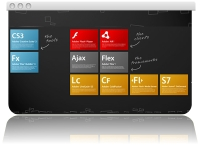

Solutions | Enterprise Solutions
Our technological areas of excellence include enterprise Java platforms (JEE/J2EE) both commercial (eg. WebLogic, Oracle) and open source (eg. JBoss) incorporating the best available frameworks and development tools (eg. Spring, Hibernate, Adobe Flex , ZK Framework, GWT).
We are also specialized in the design and implementation of High Availability architectures and tuning of the most popular RDBMS (eg Oracle, MySQL, MS SQL Server, Postgres SQL). Our solutions integrate the latest and best enterprise technologies , nowadays essential for companies that want to maximize their investments following the paradigm of Service Oriented Architecture (SOA). Among these solutions stand the Enterprise Service Bus (ESB), and those tools that can support the extraction, transformation and loading of data (ETL).
Digitalia Sistemi implements solutions for salesforce automation, e-procurement, CRM, content management, document management, systems integration, but also applications for e-business, supply chain management as well as solutions for monitoring production processes so as to improve the performance of daily tasks and free up resources for other activities.
Digitalia Sistemi also offers high skills in systems management, networking, and voice over IP solutions.
Mobile Solutions
Our company is specialized in application development for mobile devices like Apple iPhone, Apple iPad and smart phone running the Android operating system. With strong experience in the enterprise solutions we can implement mobile solutions perfectly integrated into the "enterprise nervous system" of our Customers.
Open Source Solutions
Open source solutions has reached a significant level of maturity constantly increasing their weight in the current ITC scenarios.
The various open source communities spread throughout the world, make available to those who are able to reap the benefits a wealth of experience and software ready to use.
Digitalia Sistemi is committed to continuously analyzing the major available open source projects and, using an approach more pragmatic than theoretical, their practical application in real business contexts.
In fact, our ICT projects are characterized by the widespread use of open source products and aim to give the Customer the best value for the developed applications, with a tangible return on investment, and without penalizing key features like reliability and efficiency.
Web Solutions
Joining the technological skills present in Digitalia Sistemi with the specific expertise of our partners who are specialized in graphic design and marketing communications, we can cover every aspect of the best web presence and visibility of our Customers.
In this area we are therefore able to provide not only high quality technological solutions, reliable and effective, but also perfectly integrate them into the communicative context of the Customer, supporting the creation of the brand image on the web, leveraging on advanced GUI designs and focusing on the user experience .
Rich Internet Solutions
Rich Intenet Solutions are characterized by an high level of interactivity, multimedia and the speed of execution. They are based on a distributed architecture where the application that processes the data is transferred to the client level and provides an immediate response to the user requests, while much of the data and the "business logic" of the application remains on the remote server, with considerable relief to the user's computer.
Digitalia Sistemi, thanks to the adoption of new technologies like AJAX and Flash / Flex, is able to design and implement web solutions that provide totally renewed user interactions, based on the best aspects of design and functional features that were previously available only in desktop applications .
GIS Solutions
Digitalia Sistemi provides complete solutions in the field of GIS for the development of geographic information systems, integrating open source solutions such as Geoserver and OpenLayers and extending their capabilities integrating them in the context of Rich Internet Applications based on Flash technology / Flex components, through dedicated software.
|